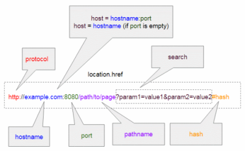

Same Origin Policy(SOP)
The same-origin
policy is a critical security mechanism of
Browsers that restricts how a document(HTML page[*.html] or a response to Ajax request [xhr])
loaded by one origin can interact with a resource from another origin. It helps isolate potentially malicious
documents, reducing possible attack vectors.
Images(*.png,...), style information (*.css) and JavaScript
files
(*.js) are not document and are excluded from the previous statement; they are always accessible
regardless their origin, and the browser loads them without consulting SOP.
The browser let Javascript
access to a resource if
protocol,
host and
port
match
example: URL:
http://www.example.org/dir/page.html (by default http use port TCP/80, if was HTTPS we should have
expected TCP/443)
| URL controllato |
Risultato |
reason |
| http://www.example.org/dir/page.html |
yes |
Same protocol, host and port |
| http://www.example.org/dir2/other.html |
yes |
Same protocol, host and port |
| http://www.example.org:81/dir/other.html |
no |
Same protocol and host but different port |
| https://www.example.org/dir/other.html |
no |
Different protocol |
| http://en.example.org/dir/other.html |
no |
Different host (different subdomain en) |
| http://example.org/dir/other.html |
no |
Different host (subdomain www required) |
| http://v2.www.example.org/dir/other.html |
no |
Different host (diffeent subdomain v2) |
| http://www.example.org:80/dir/other.html |
depend |
Port explicit. Depends on implementation in browser |
Same-Origin Policy(SOP) applies only to the actual
JavaScript of the webpage. SOP does not permit to a
script to access data in an another webpage if this one does not have the same
protocol,
host and
portSame-Origin Policy does not apply to
HTML tags that link to external resources of images, CSS, and
dynamically-loaded scripts.
An example of attack that take advantage of that is the
Cross Site Request Forgery(called aldo CSRF,
XSRF,
Sea-Surf)
HTML tags:Javascript →
JavaScript code must be inserted between <script> and </script> tags, scripts can be placed in the
<body> or in the <head> section of an HTML page, or in both
Image → to link an
image, use the <img> tag(that has no end tag)inside <a>....</a> tags
(e.g.: <img
src="hello.png" alt="hi" width="40" height="40">)
CSS
external → add a link to it in the <head> section of the HTML page
( e.g.: <link
rel="testCSS" href="test1.css">)
dynamically loaded scripts → to load
dynamically a .js file we can insert it in a <script> tag in the <head> section of the HTML page
(e.g.: <script type="text/javascript"
src="script.js"></script>)
document → to link a document, use the
<iframe> tag
(e.g.: <iframe
src="http://www.example.com"></iframe>)
object → to embed object(like
audio, video, Java applets, ActiveX, PDF, Flash and also another webpage) within an HTML document use the
<object> tag
(e.g.: <object width="200" height="200"
data="hello.pdf"></object>)
.....
Bibliography:
image
1:
https://o7planning.org/https://en.wikipedia.org/wiki/Same-origin_policy
{kind=link}